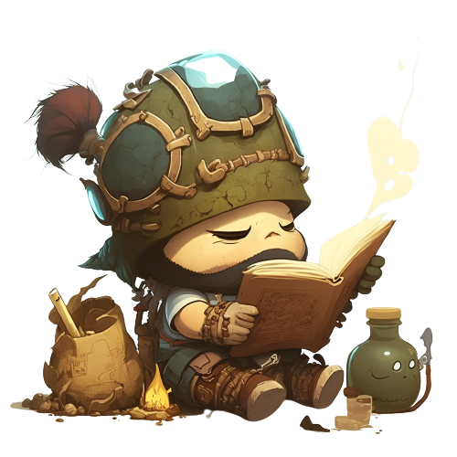

<div class="bg-gray-800 text-white h-screen p-4">
    <div class="flex justify-center items-center mt-20 ">
        <div class=" flex flex-col bg-gray-900 items-center  border-solid border-2 p-10 rounded-xl">
            <h1 class="text-4xl text-yellow-400  font-bold">Dofus Forge</h1>
            <p class="text-white-100 font-semibold max-w-md mt-5"> Notre outil Dofus Forger vous permet de trouver l'optimisation idéale pour votre personnage Dofus. Nous vous proposons une large gamme d'options d'équipement et notre outil vous aidera à sélectionner celles qui conviennent le mieux à votre personnage et à votre style de jeu</p>
            <div class="mt-4 flex">
                <a href="/creationStuff" class="bg-button-color rounded-full px-4 py-2 font-semibold hover:bg-yellow-400">Crée votre Stuff</a>
            </div>
        </div>
        <div class="flex flex-row p-10">
            
        </div>
    </div>
</div>